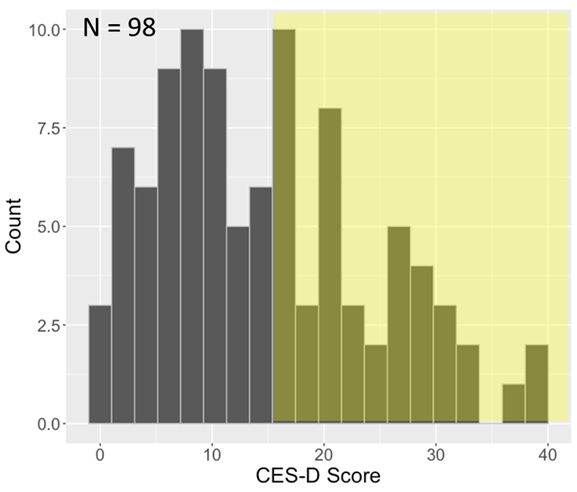
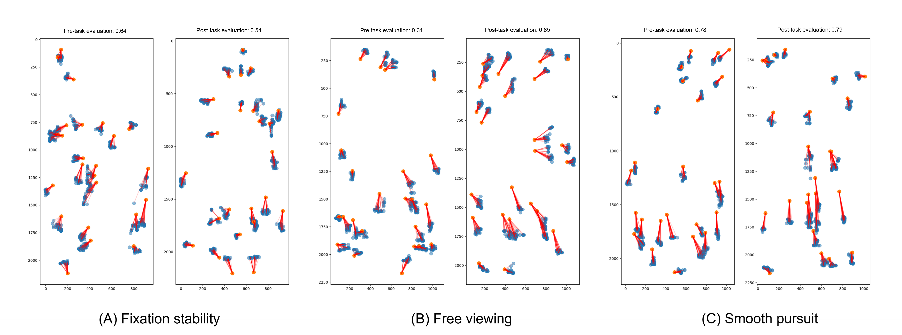

Gancheng Zhu1, Zehao Huang1, Xiaoting Duan1, Shuai Zhang2, Rong Wang1, Yongkai Li1, Zhiguo Wang1
1Center for Psychological Sciences, Zhejiang University, Hangzhou, China
2Tianmushan Laboratory, Hangzhou, China
The Tianqiao and Chrissy Chen Institute (TCCI) funded the research work presented here. Correspondence should be addressed to Zhiguo Wang, 148 Tianmushan Rd., Hangzhou, China 310028; Email: zhiguo@zju.edu.cn.


| Feature | Description |
|---|---|
| fs_sac_count | Saccade count |
| fs_sacDuration_mean | Mean saccade duration |
| fs_sacDuration_std | The STD of saccade durations |
| fs_sacAmp_mean | Mean saccade amplitude |
| fs_sacAmp_std | The STD of saccade amplitudes |
| fs_sacVel_mean | Mean saccade velocity |
| fs_sacVel_std | The STD of saccade velocities |
| fs_fix_count | Fixation count |
| fs_fixDuration_mean | Mean fixation durations |
| fs_fixDuration_std | The STD of fixation durations |
| fs_x_mean | Mean gaze position in the horizontal direction |
| fs_x_std | Variation in gaze position in the horizontal direction |
| fs_y_mean | Mean gaze position in the vertical direction |
| fs_y_std | Variation in gaze position in the vertical direction |
| Feature | Description |
|---|---|
| sp_sac_count | Saccade count |
| sp_sacDuration_mean | Mean saccade duration |
| sp_sacDuration_std | The STD of saccade durations |
| sp_sacAmp_mean | Mean saccade amplitude |
| sp_sacAmp_std | The STD of saccade amplitudes |
| sp_sacVel_mean | Mean saccade velocity |
| sp_sacVel_std | The STD of saccade velocities |
| sp_fix_count | Fixation count |
| sp_fixDuration_mean | Mean fixation durations |
| sp_fixDuration_std | The STD of fixation durations |
| sp_x_offset_mean | Mean of gaze offset from the pursuit target in the horizontal direction |
| sp_x_offset_std | The STD of gaze offset from the pursuit target in the horizontal direction |
| sp_y_offset_mean | Mean of gaze offset from the pursuit target in the vertical direction |
| sp_y_offset_std | The STD of gaze offset from the pursuit target in the vertical direction |
| Feature | Description |
|---|---|
| exp_fix_count | Fixation count |
| exp_fixDuration_mean | Mean fixation duration |
| exp_fixDuration_std | The STD of fixation durations |
| exp_x_mean | The mean gaze position in the horizontal direction |
| exp_x_std | The STD of gaze position in the horizontal direction |
| exp_y_mean | The mean gaze position in the vertical direction |
| exp_y_std | The STD of gaze position in the vertical direction |